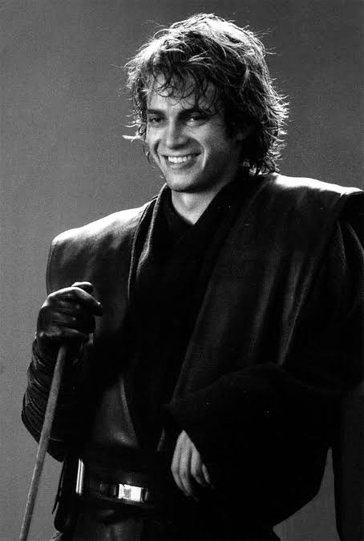
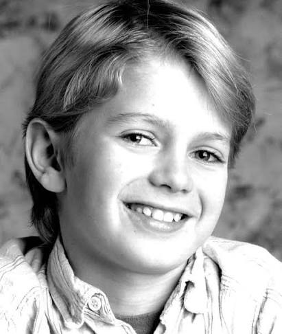

Ator canadense de 45 anos, famoso por interpretar Anakin Skywalker em Star Wars.

Hayden Christensen (Vancouver, 19 de abril de 1981)[1] é um ator canadense. Ele é mais conhecido por interpretar Anakin Skywalker / Darth Vader na franquia Star Wars. Apareceu pela primeira vez nos filmes Star Wars: Episódio II – Ataque dos Clones (2002) e Star Wars: Episódio III – A Vingança dos Sith (2005),
Christensen começou sua carreira na televisão canadense aos 13 anos, passando para a televisão estadunidense no fim dos anos 1990. Entre seus primeiros trabalhos de destaque estão As Virgens Suicidas (1999), Life as a House (2001) e Shattered Glass (2003), pelos quais ganhou aclamação crítica pelos papéis de Sam em Life as a House e de Stephen Glass em Shattered Glass. Entre as conquistas de Christensen, estão indicações ao Globo de Ouro e ao Prêmio do Sindicato de Atores dos EUA, além de ter recebido o Trophée Chopard do Festival de Cannes. Outros de seus papéis de destaque são em Awake (2007), em Jumper (2008), em Takers (2010) e em Little Italy (2018).
| Nome do Filme | Ano | Tecnica |
|---|---|---|
| Star Wars Episódio III - A Vingança dos Sith | 2005 | Atuação |
| Territoro Virgem | 2007 | Atuação |
| Star Wars - Obi Wan Kenobi | 2022 | Atuação |
Christensen nasceu em Vancouver, Colúmbia Britânica, filho de Alie, uma redatora de discursos estadunidense, e David Christensen, um programador e executivo das comunicações canadense. Seu pai é descendente de dinamarqueses e sua mãe tem ascendência sueca e italiana.[2] Christensen é o terceiro de quatro filhos, com três irmãos atores: o irmão mais velho Tove, a irmã mais velha Hejsa e a irmã mais nova Kaylen. Ele passava os verões em Long Island com sua avó materna, Rose Schwartz.
Christensen estudou na Unionville High School em Markham, Ontário.[5] Foi atleta no ensino médio, jogando hóquei competitivamente e tênis em nível provincial.[4] Frequentou o Actors Studio na cidade de Nova Iorque; estudou também no programa de teatro Arts York durante ensino médio.[6] Depois de acompanhar sua irmã mais velha ao escritório de seu agente depois que ela conseguiu um papel em um comercial da Pringles, ele também começou a ser escalado para comerciais, inclusive para o xarope para tosse Triaminic em 1988.[6]
